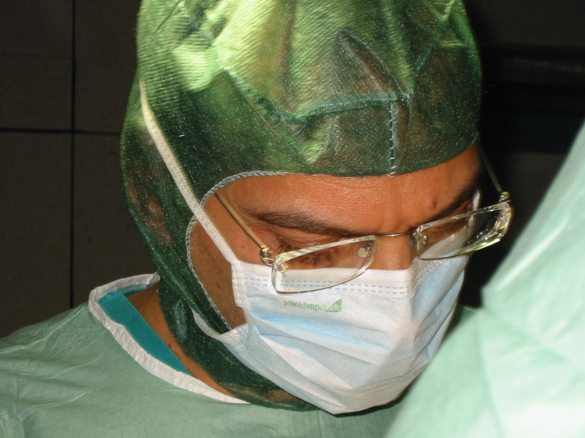

Esperienza, funzione e rispetto dell'anatomia

"La chirurgia non è soltanto tecnica. È conoscenza dell'anatomia, rispetto della funzione e capacità di scegliere, per ogni paziente, l'intervento realmente più adatto."
Dopo oltre quarant'anni di attività professionale ho avuto il privilegio di confrontarmi con ambiti molto diversi della chirurgia del distretto testa-collo.
La mia esperienza non si è sviluppata all'interno di un singolo settore specialistico, ma attraverso il trattamento di patologie molto differenti tra loro, accomunate dalla necessità di una profonda conoscenza dell'anatomia e da un approccio chirurgico rigoroso.
Nel corso della mia attività ospedaliera ho eseguito interventi di chirurgia oncologica otorinolaringoiatrica e maxillo-facciale, chirurgia traumatologica del volto, chirurgia della base cranica anteriore, chirurgia transfenoidale dell'ipofisi, chirurgia dell'orbita, delle vie lacrimali e del collo, oltre a interventi di ricostruzione microvascolare dopo demolizioni oncologiche del cavo orale e del distretto cervico-facciale.
Ho inoltre trattato patologie delle ghiandole salivari, tumori benigni del collo, patologie dell'orecchio medio, cisti odontogene dei mascellari, poliposi nasale, sinusiti croniche e numerose altre condizioni che interessano il complesso distretto cervico-facciale.
Terminata l'attività ospedaliera, ho continuato a dedicarmi alla chirurgia del distretto testa-collo in ambito libero-professionale.
La mia attività comprende la chirurgia funzionale ed estetica del volto, la chirurgia naso-sinusale endoscopica, la chirurgia delle vie lacrimali, la chirurgia delle ghiandole salivari, il trattamento delle lesioni benigne del collo, la chirurgia dell'orecchio medio e la chirurgia delle cisti odontogene e delle patologie dei mascellari.
Mi occupo inoltre di rinoplastica primaria e secondaria, blefaroplastica e otoplastica. Alla chirurgia affianco l'attività di medicina estetica mediante filler, trattamenti biostimolanti e fili riassorbibili per il volto e per il corpo.
Un settore cui mi sono dedicato con particolare interesse è la chirurgia delle vie lacrimali e, in particolare, la dacriocistorinostomia endoscopica, procedura che consente di trattare l'ostruzione delle vie lacrimali evitando incisioni cutanee esterne.
La chirurgia oncologica, traumatologica e ricostruttiva insegna che ogni struttura anatomica possiede una funzione precisa.
Per questo motivo ho sempre ritenuto che il miglior intervento non sia necessariamente quello più esteso o più appariscente, ma quello che raggiunge l'obiettivo terapeutico preservando il più possibile la funzione e l'equilibrio anatomico.
Nel distretto testa-collo funzione ed estetica sono spesso strettamente collegate.
Un naso deve consentire una corretta respirazione oltre a essere armonico dal punto di vista estetico. Una ricostruzione dopo un trauma o dopo l'asportazione di un tumore deve restituire non soltanto un aspetto accettabile, ma anche una funzione adeguata.
Lo stesso principio guida il mio approccio alla chirurgia estetica e alla medicina estetica: migliorare senza alterare, correggere senza stravolgere.
L'esperienza mi ha insegnato che non sempre è possibile ottenere la perfezione e che non tutti i problemi possono essere risolti completamente.
Ritengo che uno dei doveri fondamentali del medico sia fornire informazioni corrette, realistiche e comprensibili, illustrando con chiarezza benefici, limiti e possibili rischi di ogni procedura.
La fiducia nasce dalla trasparenza e dalla condivisione degli obiettivi terapeutici.
La relazione tra medico e paziente rappresenta una parte essenziale del percorso di cura.
Ascolto, disponibilità, corretta informazione e attenzione alle esigenze individuali costituiscono, a mio avviso, elementi importanti quanto la tecnica chirurgica stessa.
Le tecniche chirurgiche evolvono continuamente, ma alcuni principi rimangono immutati.
Rispetto dell'anatomia, attenzione alla funzione, accuratezza tecnica, aggiornamento professionale e corretto rapporto con il paziente sono i valori che hanno guidato il mio percorso professionale e che continuano ancora oggi a orientare la mia attività clinica e chirurgica.
"Ogni intervento è diverso, ogni paziente è unico. La buona chirurgia nasce dall'incontro tra esperienza, conoscenza e rispetto della persona."